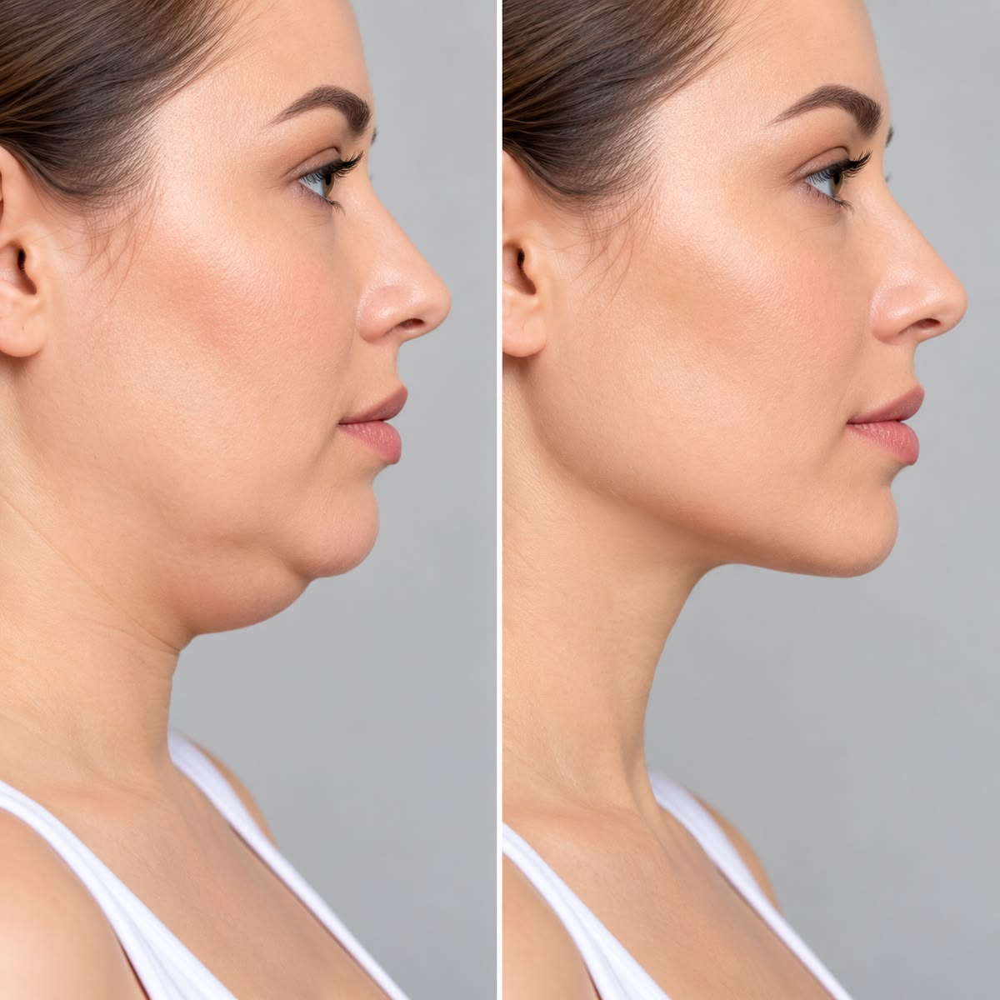
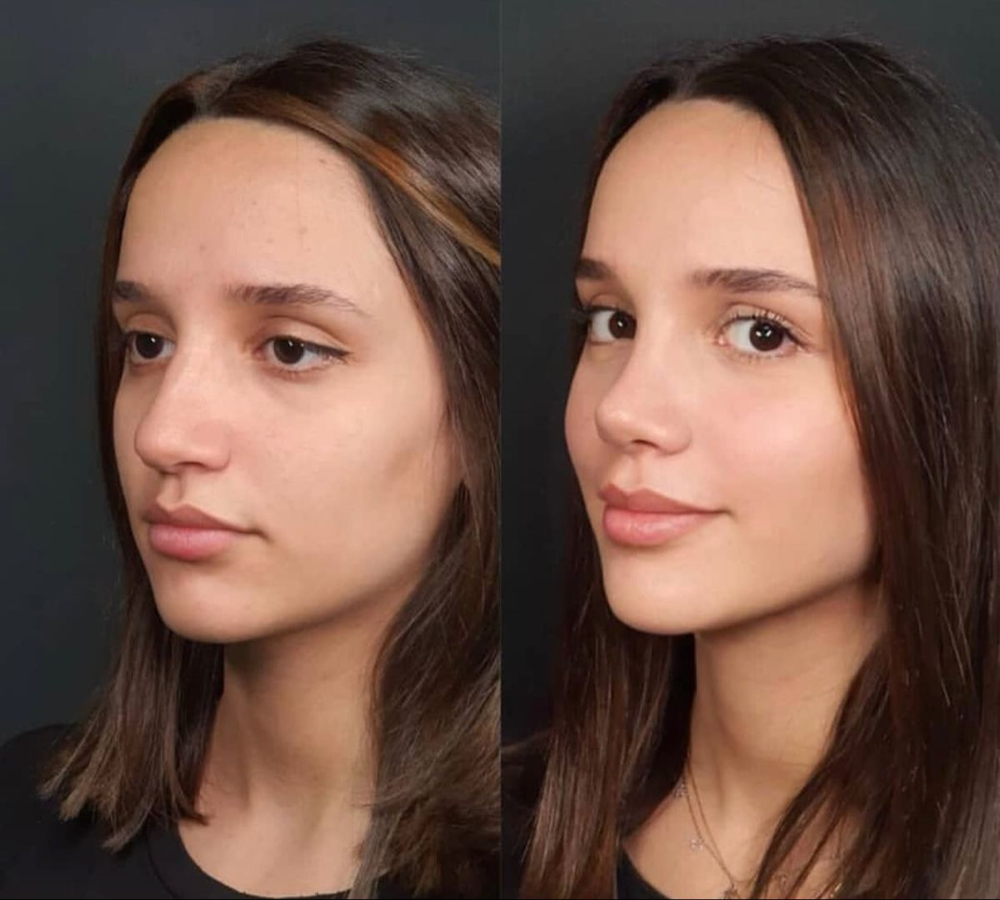
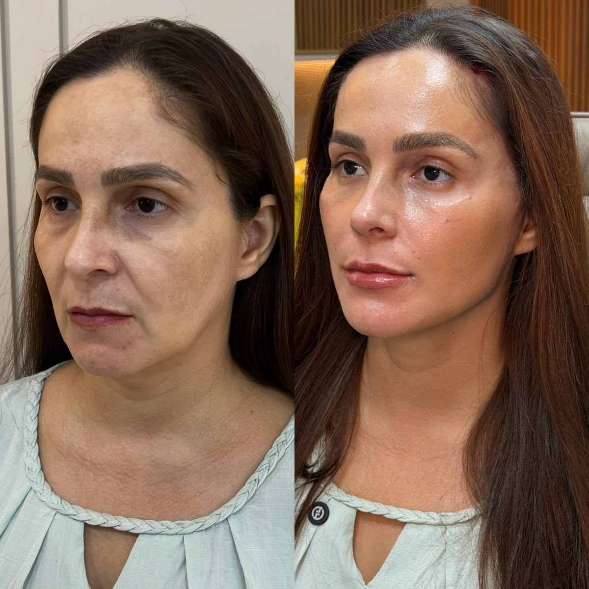
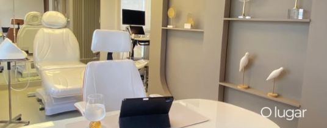

Espaço reservado para um depoimento real e autorizado. Nenhuma avaliação de paciente foi adicionada nesta demonstração.
Beleza refinada.
Essência preservada.
Um espaço para apresentar tratamentos estéticos e uma abordagem individualizada de cuidado.
Avaliação
individual
individual
Planejamento
personalizado
personalizado
Cuidado
em cada etapa
em cada etapa
◆CUIDADO
INDIVIDUAL✦ ✦ ✦ ✦ ✦ESCUTA. PLANEJAMENTO.
ATENÇÃO.✧
INDIVIDUAL✦ ✦ ✦ ✦ ✦ESCUTA. PLANEJAMENTO.
ATENÇÃO.✧
Nossos tratamentos ◆
Estética facial
Procedimentos faciais e planejamento individual.
Contorno corporal
Abordagens corporais conforme avaliação.
Cuidados corporais
Possibilidades definidas pelo profissional.
Injetáveis
Indicações e técnicas a confirmar.
Pele & tecnologia
Cuidados com a pele e recursos disponíveis.
Não cirúrgicos
Opções de cuidado conforme indicação.
Categorias ilustrativas — validar os serviços efetivamente oferecidos.
Resultados reais. Cuidado individual.




Espaços demonstrativos. Inserir apenas imagens autorizadas e conteúdo validado pelo profissional.

Conheça o profissional
Dra. Stéphane Loiola
Formação e registro profissional
a serem informados e validados.
Este espaço apresenta a trajetória, a abordagem de atendimento e a formação do profissional. O conteúdo definitivo será escrito a partir de informações confirmadas.
Conheça o doutor ›
Um espaço de cuidadoDiscreto. Acolhedor. Individual.
O que dizem nossos pacientes
Espaço reservado para um depoimento real e autorizado. Nenhuma avaliação de paciente foi adicionada nesta demonstração.
Espaço reservado para um depoimento real e autorizado. Nenhuma avaliação de paciente foi adicionada nesta demonstração.
Dúvidas frequentes
Antes de começar,
vamos conversar.
Reunimos algumas informações para ajudar você a dar o primeiro passo com mais clareza.
Tenho outra dúvidaComo funciona a primeira consulta?
A primeira consulta é o momento de conversar sobre suas expectativas, esclarecer dúvidas e avaliar as possibilidades de atendimento. As orientações e eventuais indicações são definidas individualmente pelo profissional.
Preciso saber qual procedimento quero fazer?
Você pode começar contando o que gostaria de entender ou quais são suas principais dúvidas. Não é necessário escolher um procedimento antes de conversar com o profissional.
Onde posso consultar valores e formas de pagamento?
Entre em contato para consultar as informações de atendimento, os valores e as condições disponíveis. Quando houver indicação de tratamento, o planejamento e o orçamento devem ser apresentados antes da contratação.
Como posso solicitar um agendamento?
Preencha o formulário abaixo para preparar sua solicitação de contato. A data e o horário dependem da disponibilidade e da confirmação do atendimento.
Posso esclarecer outras dúvidas antes de agendar?
Use o campo de mensagem do formulário para informar o que gostaria de esclarecer. Questões que exigem avaliação individual devem ser conversadas diretamente com o profissional.
Pronto para iniciar
um novo cuidado?
Agende uma conversa para compreender as possibilidades e construir um plano individual.
Plano
individualAtendimento
personalizadoPrivacidade
e discrição
individualAtendimento
personalizadoPrivacidade
e discrição
Prefere conversar agora?
☏Contato a confirmar
Horários de atendimentoa confirmar com a clínica